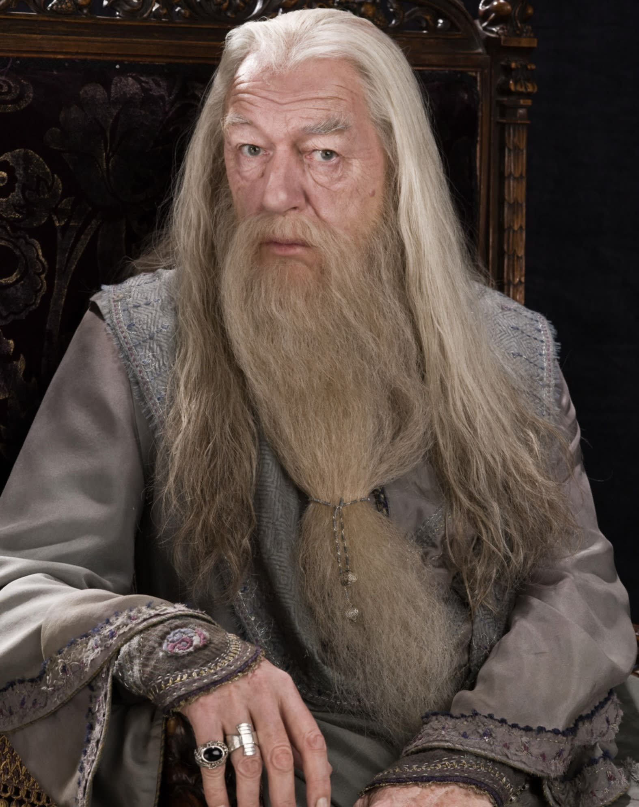

Welcome to Hogwarts
Welcome to Hogwarts School of Witchcraft and Wizardry, young wizard/witch! You will spend the next seven years here learning all sorts of subjects, from Charms to Transfiguration, Potions to Herbology, and much more. But before that, you must be sorted into your house! What is a house? It's basically which broader student body you will be a part of. You will be sorted via the Sorting Hat into one of four houses based on your personality traits. The four houses are Slytherin, Gryffindor, Hufflepuff, and Ravenclaw, named after the four great founders of this school. Although they are sadly long gone and the school is now run by Professor Dumbledore, we still use their names for the great houses.